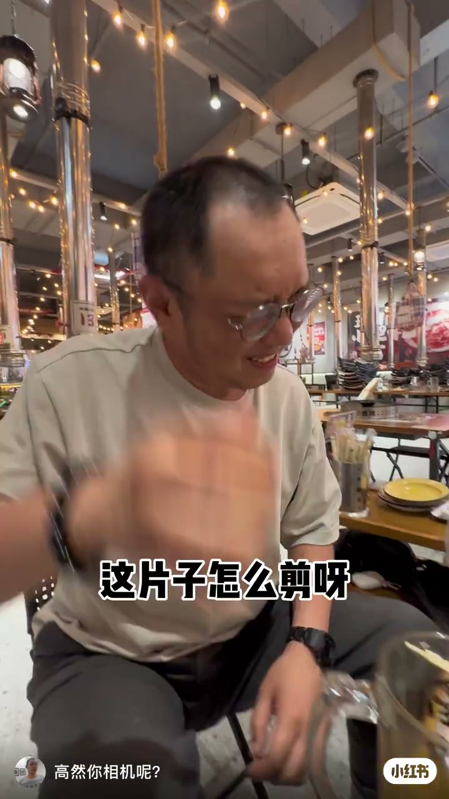
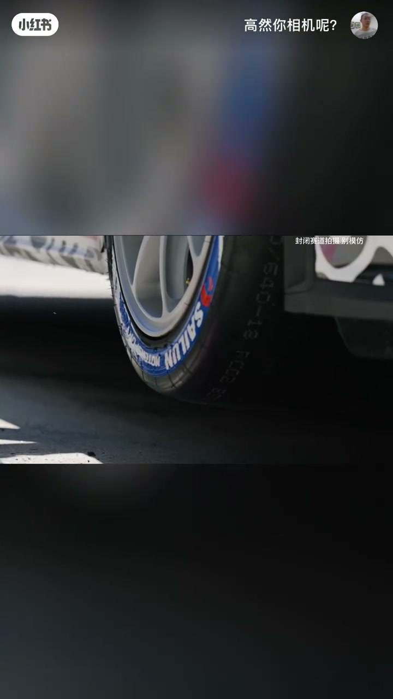
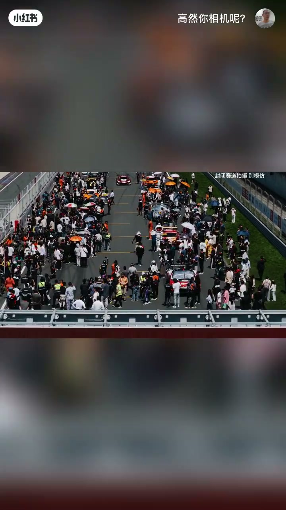
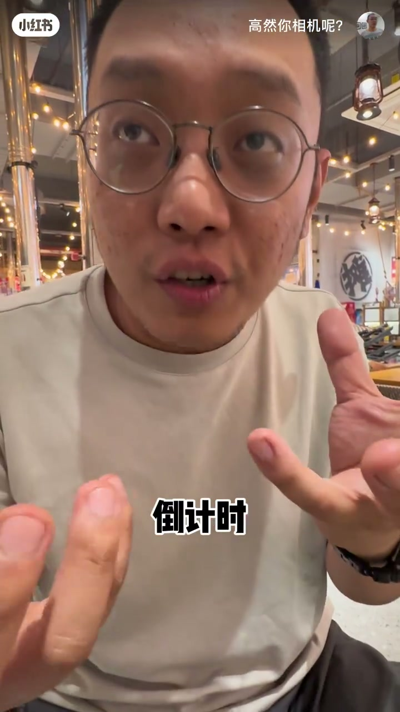
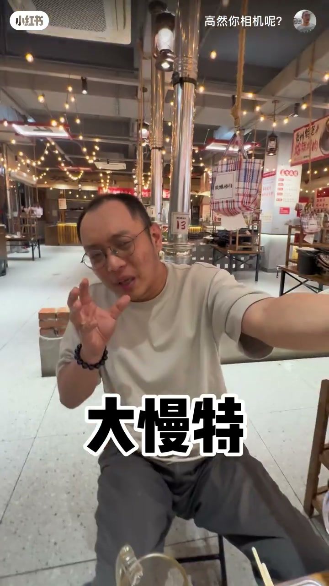
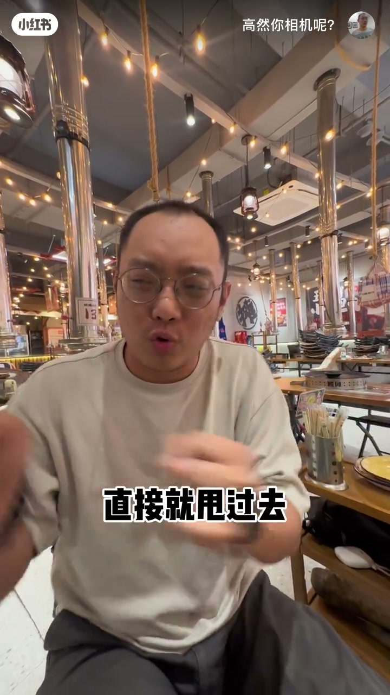

内容要点
知识结构
烧烤店口播立题「这片子怎么剪呀」——不是教参数，而是把「赛车素材怎么剪才有劲」摆上桌。
横屏 B-roll 过铁丝网外赛道、赛轮轮胎特写、发车区人群与多台赛车；角标标明封闭赛道拍摄、请勿模仿。
口播字幕钉死剪辑关键词「倒计时」与「大慢特」——把情绪压进发车数字，再用大特写慢动作放大瞬间。
字幕补全操作感：「就钻那倒计时里边」「直接就甩过去」——先咬住倒计时段落，再把慢动作特写甩进节奏。
赛车片别平铺堆素材：以发车倒计时为节奏锚点，配大特写慢动作「甩」过去，比单纯炫车更有剪辑张力。
图文实录
烧烤店发愁：这片子怎么剪
视频标题是「嗝～」，开场却毫无铺垫地落在烧烤店：头顶排烟管、暖色灯串，作者戴着眼镜坐在桌边，一只手抬到脸侧，整个人就是「吃着火锅唱着歌——不，是吃着烤肉想着剪片」。画面正中打出大字幕：
Whisper 把开场记作繁体「導演這片子怎麼剪呀」，与字幕语义一致。语气不是教程腔，更像同行吐槽：赛车/汽车摄影素材拍了一堆，进时间线就卡住。

素材过目：轮胎与发车区
立题之后立刻切素材，而不是继续嘴炮。竖屏画布中间嵌一条横屏赛车镜头：先是铁丝网外的空旷赛道，再推到车轮特写——胎侧清晰印着「SAILUN」（赛轮），角标写着「封闭赛道拍摄 请勿模仿」。随后升到发车区俯拍：橙、红、白等多台赛车停在格位附近，人群撑伞、举机位，场面拥挤、信息密度高。
这一段几乎没有可用口播分段，功能是「让观众先看见片子长什么样」：有轮胎质感、有发车仪式感、有封闭赛道的合规提示。后面的「怎么剪」都要咬住这些高能量瞬间，而不是把素材当流水账排开。


剪辑锚点：倒计时与大慢特
素材示意完，镜头回到烧烤店近景。作者双手比划，字幕先落下两个字号极大的词：
随即切出横屏车轮与红色赛道标线，再回到口播，第二个关键词出现：
按影视口癖，「大慢特」通常指大特写 + 慢动作——把轮胎纹理、车身细节或发车瞬间拉长时间，让观众「咬」住那个点。中间还插入维修区/车库剪影一类横屏镜头，光线从暗处望向看台，对比强烈。Whisper 在约 30 秒处记有「打一下吧」，画面并无对应清晰字幕，本文不以该句为结论依据。


用法：钻进倒计时，再甩过去
后半段把两个锚点合成操作口诀。画面字幕出现「就钻那倒计时里边」——意思是剪辑点不要飘在空泛的巡航镜头上，而要钻进发车倒计时那段有数字、有集体紧张感的时间条。紧接着作者双手大幅度甩动，字幕收束：
中间有若干高度模糊、叠加「此处根据当前剪辑音频刻意留白」的帧——那是成片按音频节奏留白的痕迹，不是黑屏故障。整条片子的幽默点在于：人在烧烤店「嗝」着饭，脑子里却在排赛车时间线；方法本身却很硬核——倒计时定锚，大慢特甩出去。
